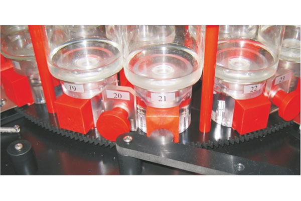
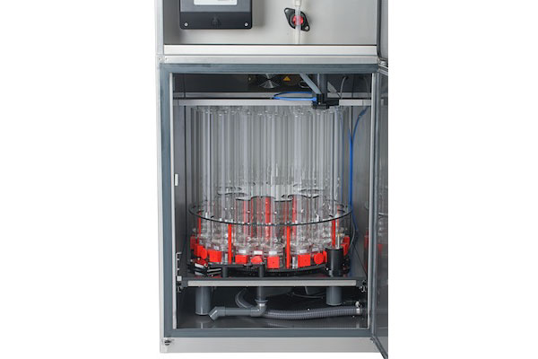

SP5 A
| Type | Self-emptying fixed site sampler |
| Housing | Double-walled stainless steel (material 1.4301/ SS304) with 40 mm insulation. Housing separated in sample compartment and control compartment, each with lockable door. Protective top which can be opened for connection and maintenance works. Option: material 1.4571/ SS316Ti or SS304/ SS316Ti -EPOXY coated |
| Thermostatic control | Self-contained, controlled cooling / heating with 4 settings, no-frost. independent of the programmable controller, Temperature in sample compartment: 4°C (adjustable from 0,0-9,9°C) |
| Control | Microprocessor control, Sleep-Mode (<5mA), power supply 8-16 V foil keyboard (with keys 0-9, ESC, ENT, cursor), graphical display (128*64 Pixel), back lit |
| Data logger | 3000 entries, non-volatile data memory; storage of sampling and malfunction data like sample extractions, bottle changes, messages, external signals. optional with WEB-board 100 MB (2 Year ring memory-FIFO at 1 min interval) |
| Programming | 12 freely programmable user programs, with function to link programs. |
| Program start options | - IMMEDIATELY; - DATE/TIME - WEEKDAY/TIME; - BY AN EXTERNAL SIGNAL |
| Program End/Stop options | End of sampling program - AFTER 1 RUN - AFTER X RUNS - CONTINUOUS OPERATION - DATE/TIME |
| Pause mode | Interruption of program run at any time |
| Overfilling protection | Adjustable from 1–999 samples/bottles |
| Interval setting | 1 min. to 99 h 59 min. in steps of 1 minute |
| Sampling method | -Vacuum system 20-350 ml Option: bypass system 20-250 ml (compressed air necessary) Explosion-proof diaphragm pump 230 V, vacuum 6 m, pressure 1 bar, change-over from pressure/vacuum/aeration by means of explosion-proof solenoid valves. |
| Pulse setting | 1 to 9999 pulses/sample |
| Manual sample extraction | Possible at any time without interrupting the current program run |
| Program protection | Up to 5 years after voltage loss |
| Interface | Mini-USB, RS 232 optional: Ethernet RJ45, SDI-12 |
| Signal inputs | • 2 x analogue: 0/4-20 mA, • 8 x digital (flow, event, 1 inputs can be programmed freely) option: expandable with 4x digital, 3 inputs can be programmed freely, and 8x analogue 0- 20 mA or 0-10 V, Impulslength 60ms, switching level 7-24 V, max. working restistance 500 Ohm, max. length of signalcable 30 m |
| Bottle variants | 2 x 10 L PE 4 x 5 L PE 12 x 1,6 L glass Duran50 optional: 24 x 2 L glass Duran50 (1400 x 800 x 850 mm) |
| Wetted materials | PC, PVC, Silicone, PS, PE, EPDM (optional: metering vessel glass Duran50, sinker weight SS304) |


